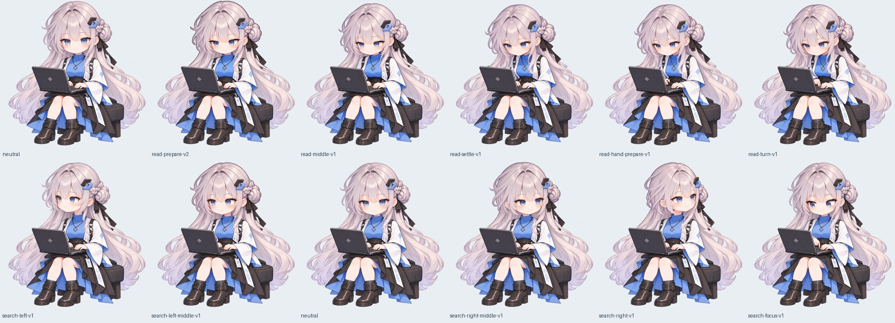
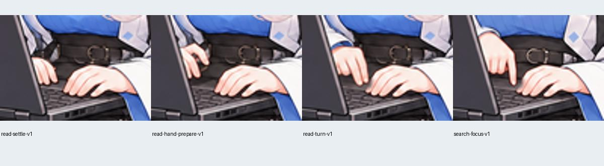

内部审查，不是最终runtime动画。使用真实生成中间原画与局部保留；不含整体旋转/缩放/形变插帧。重点检查头骨体积、脸部年龄、颈肩与头发遮挡、手部接触和回程。人物周边props尚未叠加。


生成器实际做出人物右手（画面左侧）的翻页/选择动作，与prompt指定侧不同；保留了这一解剖连贯方案，另一手完全锁原锚。手势指向掌托/键盘区域，不宣称画面有独立清楚可见的触控板。首个过度俯身的准备候选已拒绝并排除。